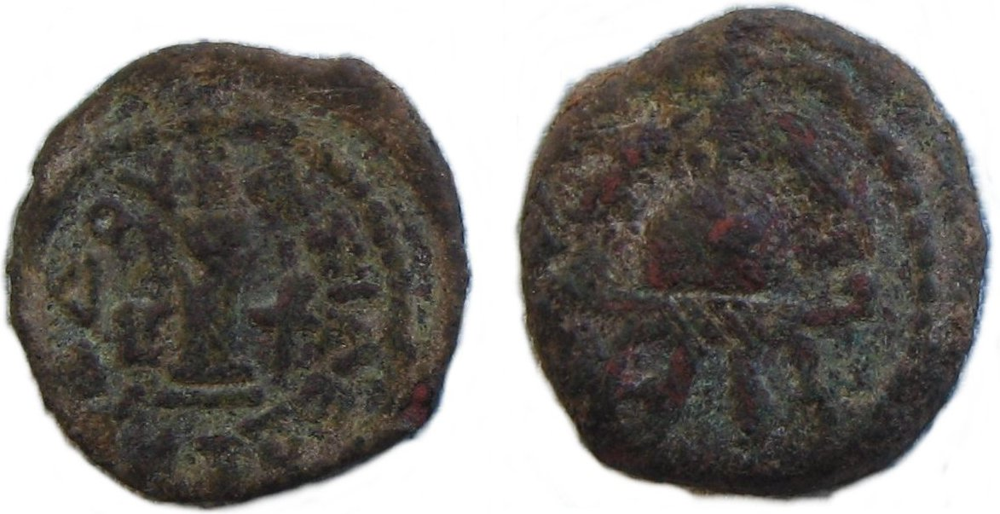

Herod the Great Coins

- Find Name
- Herod the Great Coins
- Description
- Bronze prutahs and half-prutahs (lepta) of Herod the Great, struck at the Jerusalem mint during his reign (king from 37 BC; ruled 40-4 BC). The most common type pairs an anchor inscribed 'of King Herod' in Greek with a double cornucopia and caduceus (Meshorer TJC 59; struck in huge quantities, c. 21-12 BC). Other types include a cornucopia with an eagle — the first coin by a Jewish ruler to carry a graven image, linked to the golden eagle Herod set over the Temple gate c. 4 BC — and an anchor with a galley, possibly recalling the harbor at Caesarea Maritima (built 22-10 BC).
- Historical Period
- Herodian Period
- Evidence Class
- Direct
- Interpretations
- The coins name 'King Herod' — the Matthew 2 ruler — in Greek. Their symbolism is debated: some read the anchor and cornucopiae as continuing Hasmonean types, others as pagan or sovereignty imagery, so do not overclaim a single reading. The eagle type's connection to the Temple-gate eagle is a plausible link, not a certainty. The coinage as a whole shows a ruler balancing Jewish sensibilities (no portraits) with Hellenistic royal imagery.
- Related Places
- Related Books
- Related People
- Scripture Illuminated
- Biblical Significance
- Matthew 2 opens 'in the days of Herod the king'; these are the coins of that king, struck in Jerusalem in the years around Jesus' birth, and they name him directly.
- Artifact Date
- 40-4 BC
- Current Location
- Examples in the Israel Museum and the British Museum
- Discovery Location
- Jerusalem and Judaea
- Timeline Era
- Return and Second Temple
Awaiting Review Not yet checked against scholarly sources. Treat its claims as provisional until this entry is reviewed. About verification
Sources: https://coinweek.com/coins-of-herod-the-great-coinweek-ancient-coin-series/
https://jewishvirtuallibrary.org/coins-from-the-herodian-dynasty
https://jewishvirtuallibrary.org/coins-from-the-herodian-dynasty
Last reviewed: not yet reviewed